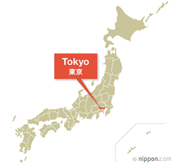
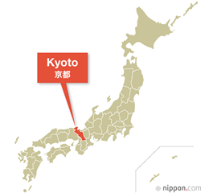
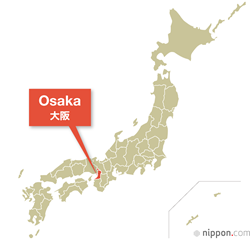
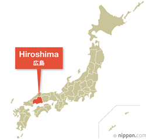
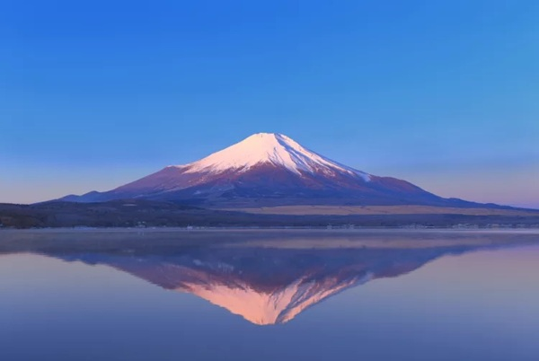

Japan is a fascinating mix of ancient traditions and modern technology. Visitors can enjoy historic temples, peaceful gardens, futuristic cities, beautiful mountains, and delicious food, all within a very safe and organized country.
TOKYOTokyo is the most populous metropolitan area in the world, with around 41 million residents. It is Japan’s economic center and the seat of the Japanese government and the Emperor of Japan. Tokyo is a highly modern city, known for its large shopping districts and its huge influence on global pop culture, including anime, manga, Godzilla, and PlayStation. |
 |
 |
KYOTOKyoto is one of the oldest municipalities in Japan, having been chosen in 794 as the new seat of Japan's imperial court until 1869. Kyoto is considered the cultural capital of Japan and is a major tourist destination. It is home to numerous Buddhist temples, Shinto shrines, palaces and gardens, some of which have been designated collectively as a World Heritage Site by UNESCO. |
OSAKAOsaka is one of Japan’s largest cities and a major economic and cultural center of the Kansai region. It is famous for its lively atmosphere, modern shopping districts, and delicious street food, earning the nickname “Japan’s kitchen.” Osaka is also known for its friendly locals and its strong pop culture presence, with attractions like Universal Studios Japan and a vibrant nightlife scene. |
 |
 |
HIROSHIMAHiroshima is a historic city in western Japan, best known for its message of peace and resilience. It is remembered as the site of the first atomic bombing in 1945, and today the city is home to the Hiroshima Peace Memorial Park and Museum. Modern Hiroshima is a vibrant city with beautiful rivers, local cuisine like okonomiyaki, and nearby attractions such as Miyajima Island with its famous floating torii gate. |
Mount Fuji, or Fujisan, is Japan’s highest mountain, standing at 3,776 meters. This active volcano is located about 100 km southwest of Tokyo and is famous for its nearly perfect symmetrical cone, often snow-capped for five months each year. Mount Fuji is a cultural icon of Japan, inspiring art, poetry, and pilgrimage for centuries. It is one of Japan’s “Three Holy Mountains” and a UNESCO World Heritage Site, with 25 locations of cultural interest, including the Fujisan Hongū Sengen Taisha shrine. Visitors can enjoy sightseeing, hiking, and photography, making it a must-see destination for anyone exploring Japan.
Sushi is a traditional Japanese dish made with vinegared rice and fresh ingredients like raw fish, seafood, or vegetables, and it is enjoyed for its simple yet delicate flavors.
Ramen is a popular Japanese noodle soup made with wheat noodles served in a rich broth, often topped with sliced pork, eggs, seaweed, and vegetables, and loved for its comforting and flavorful taste.
The Wagyu meat is famous for its rich marbling, tenderness, and flavor, and it has long been valued in Japanese cuisine, especially in dishes like sukiyaki, shabu-shabu, and steak.